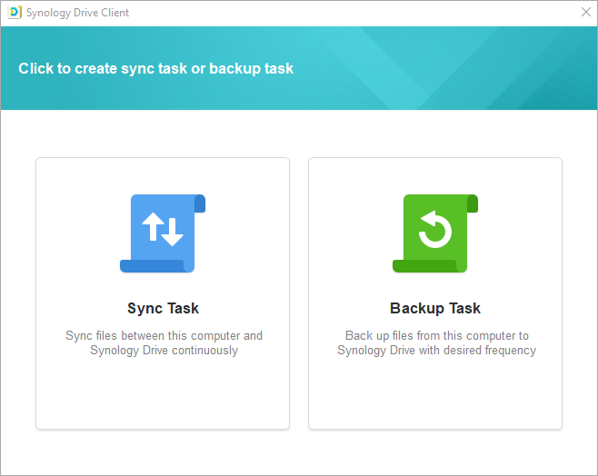
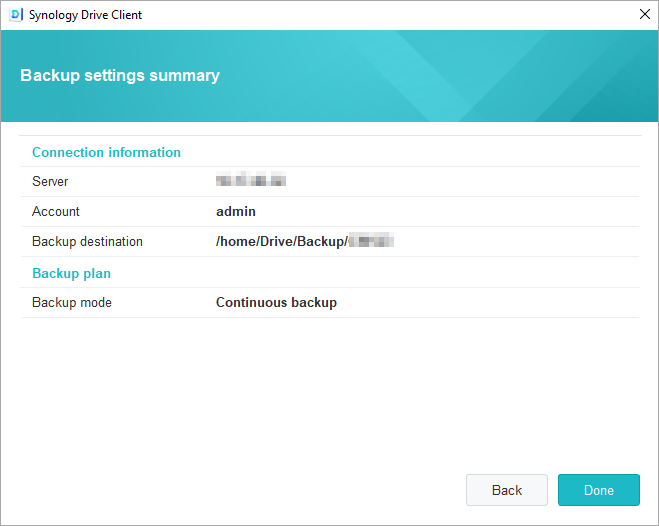

Overview
Synology Drive Server is not only a sophisticated cross-platform syncing software, it is also a smart means of backing up data from users' personal computers. Its desktop utility, Synology Drive Client, is an instantaneous, bandwidth-saving, real-time backup solution, offering excellent protection with up to 32 historical versions of a single file.
Set up Synology Drive Server on Synology NAS and download Synology Drive Client
- Go to Package Center, find Synology Drive Server, and then click Install. Three packages, Synology Drive Admin Console, Synology Drive ShareSync, and Synology Drive, will be downloaded altogether.
- Launch Synology Drive. At the bottom-right corner, you will see a prompt to download Synology Drive Client.

Or go to the bottom-left corner, click on the user icon, go to Client > Download client.

Alternatively, you can download Synology Drive Client from the Synology Download Center. - Launch the installer on your computer and follow the instructions to install Synology Drive Client. After installation, run Synology Drive Client by clicking Start Now.

- Select Backup Task.
 - Enter the address or QuickConnect ID for the Synology NAS running Synology Drive Server, username, and password. You can also click the search icon on the right, and Synology Drive Client will automatically search for any Synology NAS within your local network. Click Next.

- Select your backup source and untick any subfolders you don't want to sync. Synology Drive Client will create a backup folder in your selected destination with your computer name. The home folder will be selected as your destination folder by default. If you wish to use a folder not on the list, please contact your system administrator. System administrators can consult the Synology Drive Admin Console help page. You can also click Backup rules if you wish to set sync filters or rules. Click Next.

- Select a backup mode and click Next.

- Review a summary of your backup settings. Click Back to make any changes or click Done to finish the setup.
 - You can view your backup progress in the main window.

Download or restore a previous version of a synced file on Synology Drive Client
- In Synology Drive Client, go to Backup tasks > Restore and locate the file or folder you wish to restore.

- Select the file you want to retrieve and click Browse previous versions. If a file has been accidentally deleted or removed on your computer, you can click Restore to restore it.

- Select the version of the file you want to download and click Download.

Download or restore a previous version of a synced file on Synology Drive Admin Console
- In DSM, Go to Synology Drive Admin Console > Team Folder, click on the folder where the file you wish to restore is stored in, and click Version Explorer.

- In the Version Explorer window, click on the file you want to retrieve, and click Browse previous versions.

- Select the version of the file you want to download and click Download. Or, if you are sure you want the selected version restored, click Restore and it will overwrite your current version.

Further protection of your data
For more ways to protect and back up your data, please click here for more tutorials regarding other backup services offered on DSM.